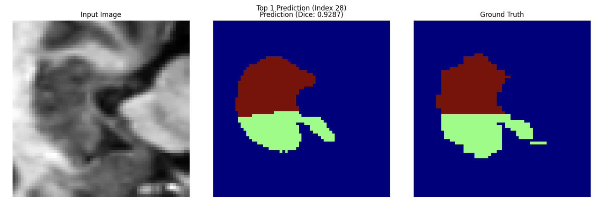
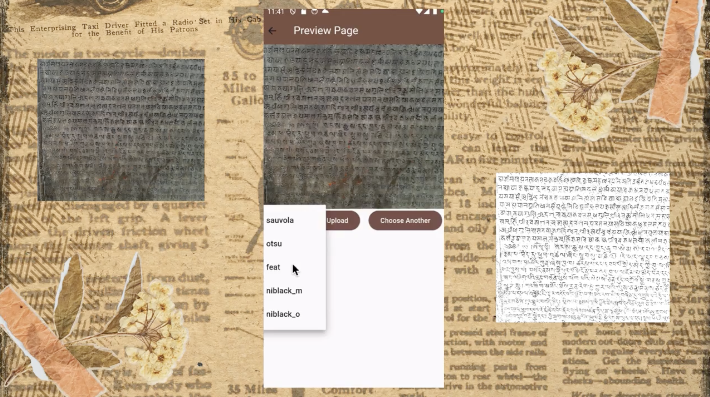
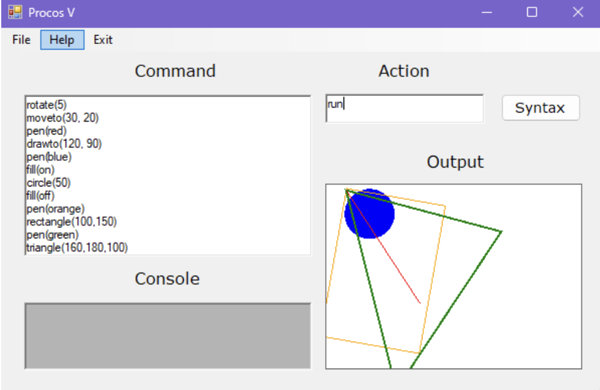
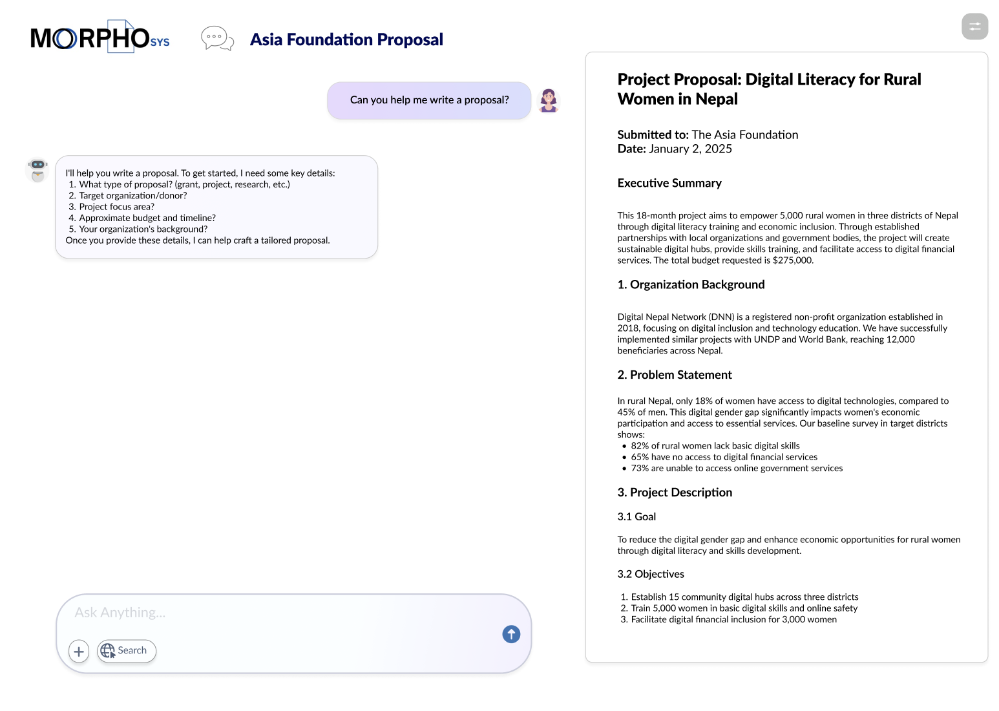
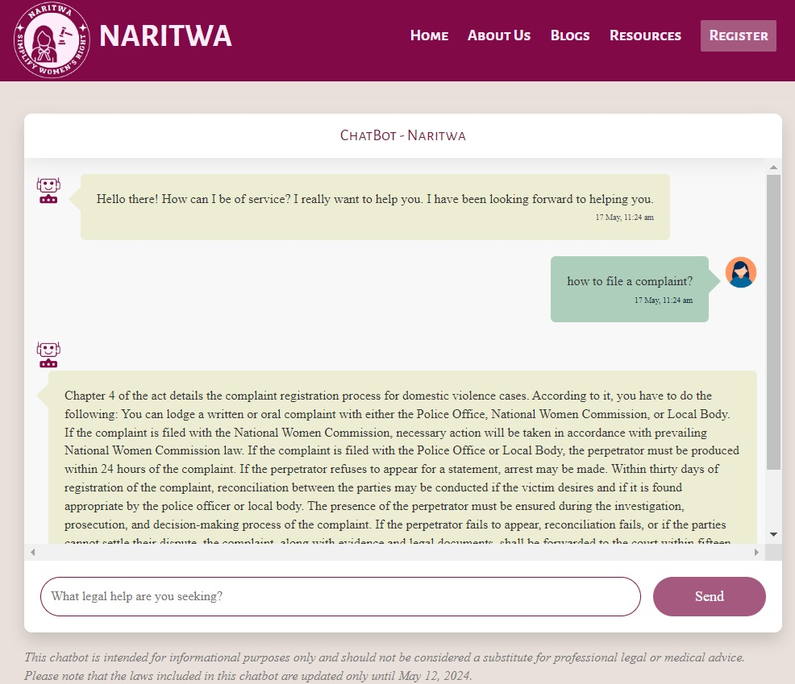
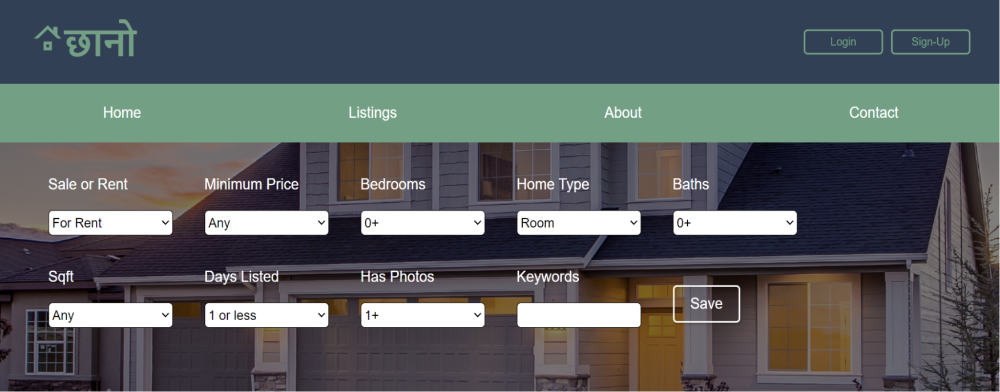

Hippocampus Segmentation
Segmenting the hippocampus from brain MRI scans
A medical imaging project exploring automatic hippocampus segmentation from T1-weighted MRI scans using deep learning.
Python · PyTorch · 3D MRI
technology that keeps people at the center

Segmenting the hippocampus from brain MRI scans
A medical imaging project exploring automatic hippocampus segmentation from T1-weighted MRI scans using deep learning.
Python · PyTorch · 3D MRI

Image processing for Newari stone inscriptions
An image-processing system for preserving and studying historical Newari stone inscriptions using thresholding and edge-detection techniques.
Python · Flutter · Flask · OpenCV

A programming language for drawing geometric shapes
A custom-interpreted language and graphical programming environment for drawing and manipulating geometric shapes through code.
C# · .NET · Windows Forms · System.Drawing

AI-assisted grant proposal development
An AI-assisted grant proposal system that helps users find relevant funding opportunities, research local context, and build proposals tailored to Nepal.
Python · LangChain · LangGraph · MongoDB · OpenAI

A chatbot for learning about women's legal rights
A conversational system designed to make information about women's legal rights easier to find and understand.
Python · LangChain · Llama 2 · Pinecone · React

A room-rental marketplace for Kathmandu University students
A web-based marketplace where students can discover rental listings, filter properties, view them on an interactive map, and contact landlords.
React · Django · PostgreSQL · Python · JWT
Smaller experiments, tools, and things I built because I was curious.
Building a neural network from the ground up
A NumPy implementation of a two-layer neural network built from scratch to understand the mechanics behind deep learning.
Python · NumPy · Jupyter